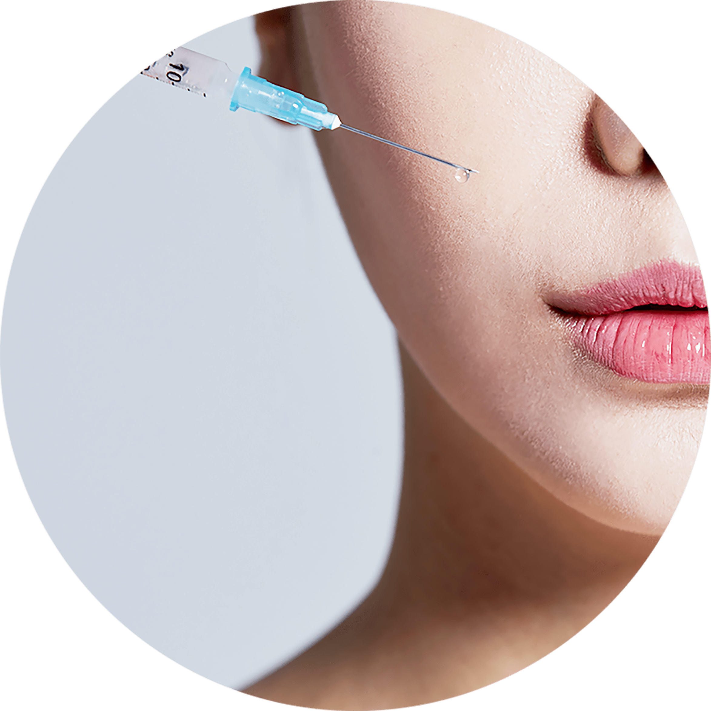

나를 위한 보톡스
나를위한 산부인과의
“보톡스”
는
의료진의 노하우와 기술력으로
여의사가 잘 아는
여자 피부에 대한 전문지식으로 최적의 장소에 정량을 사용하여
최고의 효과를 기대하는 시술입니다
- 시술시간 15분 내외
-
회복기간
시술 후
일상생활 가능 - 입원여부 없음
-
마취방법
마취크림 도포,
수면마취 가능 - 시술횟수 제한 없음
나를위한 보톡스

보톡스의 주성분은 운동신경의 말단에서 근육으로 연결되는
부위에 작용하며,
아세탈콜린의 분비를 억제하기 때문에
소량의 보톡스만으로 근육을
국소적으로 마비키셔 주름개선
효과를 볼 수 있습니다.
보톡스 노하우
-
근육의 움직임을
정확히 판단하여
효과적인 위치에
주사하는 시술력 -
시술 후 자극이 없고 곧바로
눈에 띄게 나타나는 효과 -
시술 후 개개인 얼굴에
꼭 맞는 자연스러움 -
풍부한 해부학적 지식과
경험으로 시술을 진행
보톡스 대상자
-
이마 주름 때문에 나이 들어
보이는 것이 고민인 분 -
땀이 많이 나는 부위를 개선하고 싶은 분
-
수술 없이 사각턱을 개선하고 싶은 분
-
눈가에 생기는 주름들이 고민인 분
-
얼굴에 전반적으로 주름이 많아 보이는 분
-
미간 주름 때문에 인상이 고민인 분
보톡스 시술 후 주의사항
시술 후 주의 사항은 개인 차가 있을 수 있습니다.-
01
시술 부위에 약간의 멍이나 붓기, 가려움증이 동반될 수 있으나
자연스럽게 사라집니다. -
02
시술 후 4시간 정도는 눕지 않는 것이 좋습니다.
-
03
주사 부위에 마사지나 찜질은 하지 않도록 합니다.
-
04
시술 직후 사우나나 심한 운동은 삼가는 것이 좋습니다.
-
05
사각턱 보톡스의 경우 시술 후 딱딱하거나 질긴 음식은
피하도록 합니다. -
06
시술 후 욱신거림, 저림현상이 2~4주정도 지속 될 수 있습니다.